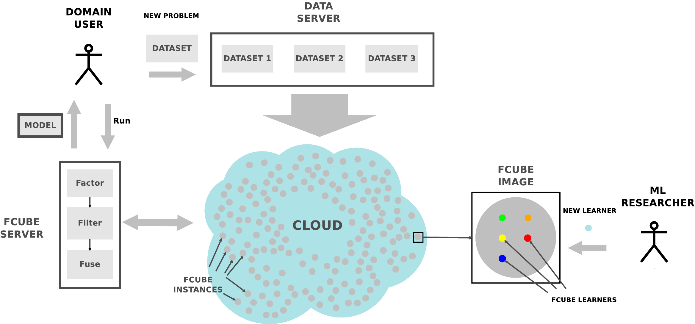

Our goal is to support and unite developers of interesting classifier algorithms to solve relevant problems of public domain. FCUBE allows to:
- Execute classification algorithms with large training data with a preset computational budget on Amazon EC2
- Retrieve the solutions from the cloud nodes, build a fused model, and compute the testing predictions
- Easily upload datasets
- Easily contribute your standalone classifier in executable format (Java, python) or as source code (must compile in Linux: C, C++ etc)
INSTRUCTIONS
Publications
Ignacio Arnaldo, Kalyan Veeramachaneni, Andrew Song, Una-May O’Reilly: Bring Your Own Learner! A cloud-based, data-parallel commons for machine learning. IEEE Computational Intelligence Magazine. vol.10, no.1, pp.20,32, Feb. 2015.
Contact
This project is developed is by the Any-Scale Learning For All (ALFA) group at MIT. Contact us by email at iarnaldo@mit.edu